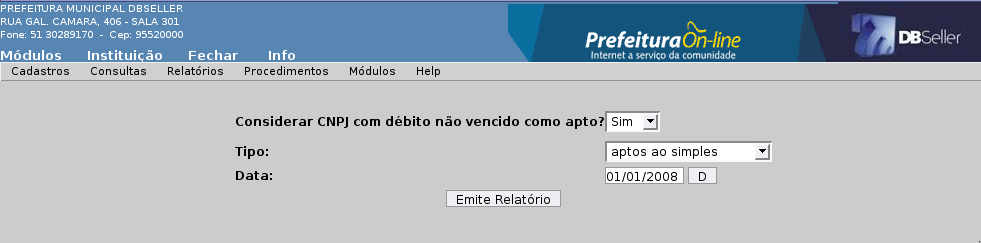
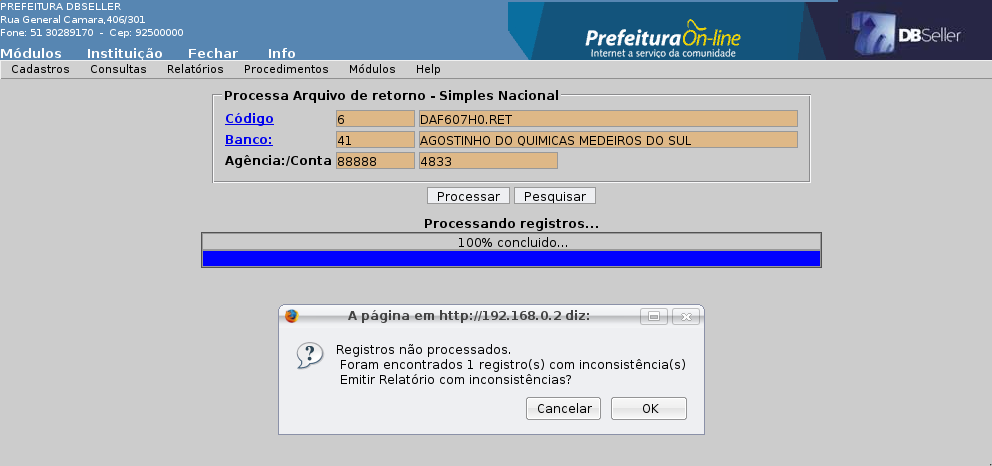

Figura 08
Índice
Atividade / Tipo de Cálculo 18
Tipo de Cálculo / Atividade 19
Classe / Atividade / Logradouro 37
Lançamento DBPref / DBPortal 41
Emissão/Reemissão Nota Avulsa 56
Processamento Arquivo Simples 58
Importação de Arquivo de Retorno 58
Processamento do Arquivo de Retorno 59
MÓDULO ISS
O objetivo deste módulo é gerenciar o cadastro das atividade econômicas do município, exercidas tanto por empresas como por profissionais autônomos, permitindo o controle, por parte do Município, da regularidade do funcionamento de estabelecimentos comerciais, identificação de fatos geradores para a cobrança tanto das taxas de fiscalização como do imposto sobres serviços.
Na verdade o Módulo ajuda a identificar qual atividade comercial cada empresa está exercendo e onde está localizada.
Nesse menu são cadastrados os estabelecimentos Comerciais, Industriais, Prestadores de Serviços, Profissionais Liberais e Autônomos. Através do CGM ele identifica se a inscrição é uma pessoa jurídica ou física.
Essa inscrição gera um alvará para a empresa, dependendo do vínculo da inscrição com as atividades, podem ser gerados os cálculos de cobrança para essa empresa, conforme a Figura 01 abaixo.
ABA Inscrição
CGM
O usuário informa o CGM para o qual será cadastrada a inscrição ou clica no link.
Inscrição: O campo é gerado automáticamente.
CGM: Busca o código automático da tela anterior.
Endereço: Busca o endereço do CGM da inscrição.
CEP:
Busca o CEP do CGM da inscrição.
Município:
Busca
o município do
CGM da inscrição.
CPF / CNPJ: Busca o CPF / CNPJ do CGM da inscrição.
Endereço Município
Endereço do Comércio, Indústria, local de atendimento do Profissional Liberal ou Autônomo.
Logradouro: Preencher o código do logradouro ou clicar no link para pesquisar.
Número: Preencher o número do local.
Complemento: Preencher o complemento (casa, sala, apartamento, prédio).
Caixa Postal: Preencher o número da caixa postal.
Bairro: Preencher o código do bairro ou clicar no link para pesquisar.
Dados Adicionais
Nome Fantasia: Preencher o Nome Fantasia da empresa.
Porte: Preencher o código do Porte ou clicar no link para pesquisar.
Escritório: Preencher o código do escritório que a empresa é vinculada ou clicar no link para pesquisar.
Empregados: Preencher a quantidade de empregados da empresa ou 1(um) para Autônomo e Profissional Liberal.
Multiplicador: Informe o número de vezes a ser calculado o Alvará ou Vistorias em uma inscrição. Exemplo: Num bar em que há diversas mesas de sinuca, podemos informar a quantidade de mesas para efeito de cálculo diferenciado por essa quantidade.
Área: Informe a área (em metros quadrados) ocupada pela empresa.
Zona: Informe a zona que a empresa está localizada no município.
Processo: Preencher o processo de protocolo que tramitou na abertura da empresa ou clicar no link para pesquisar.
Texto: Preencher texto pertinente a inscrição, como informações gerais sobre a empresa.
Observação: As observações sobre a inscrição que serão impressas no alvará.
Data da Junta Comercial: Nesse campo deve ser informada a data que foi protocolada a solicitação da constituição da Empresa na Junta comercial. Esse campo só estará habilitado no caso de inclusão de alvará para pessoa jurídica.
Reg. Junta: Nesse campo deve ser informado o número do protocolo de registro na Junta Comercial para a constituição da Empresa. Esse campo só estará habilitado no caso de inclusão de alvará para pessoa jurídica.
Data de cadastramento: Nesse campo deve ser informada a data de cadastro do alvará. A data informada nesse campo, será considerada para fins de cálculo das taxas de alvará e vistorias. Sempre que estiver sendo cadastrado um novo alvará, o sistema apresentará esse campo preenchido defaut com a data do dia, e caso desejar uma data anterior, basta alterá-la.
Alvará Sanitário: Colocar o código do alvará sanitário ou clicar no link para pesquisar. Caso haja integração entre o cadastro do ISSQN e Sanitário (parâmetro do módulo), ele vai gerar o código automático ao incluir o alvará.
Figura 01
ABA Atividade
Nesta guia são cadastradas as atividades a serem desenvolvidas pela empresa ou profissional liberal, conforme Figura 02.
Inscrição: O campo é gerado automaticamente.
Atividade: Informar o código da atividade prestada pela empresa ou clicar no link para pesquisar.
Atividade Principal: Marcar se a atividade é principal.
Multiplicador: Deve ser informado o número de vezes a ser calculado o ISSQN Fixo / Variável. Exemplo: Numa sociedade civil, informe o número de profissionais habilitados.
Tipo: Se for permanente deverá ser informado apenas o campo Data Inicial da atividade. Se for provisório deverá ser informado os campos Data Inicial e Data Final.
Data Inicial: Colocar a Data Inicial de validade da Inscrição.
Data Final: Quando a atividade for provisória coloque a data final de validade, se for permanente este campo não será informado.
Hora Inicial e Hora Final: Campo não obrigatório. Serve para informar o horário de início e fim do funcionamento para esta atividade.
Figura 02
ABA Sócio
Nesta guia devemos informar os sócios e o valor da participação no capital social da empresa de cada um. Devem ser cadastrados quantos sócios a empresa possuir, conforme Figura 03 abaixo.
CGM Inscrição: O campo é gerado automáticamente.
CGM: Preencher o código do CGM do sócio ou clicar no link para pesquisar.
Capital: Valor da participação no capital social da empresa.
Figura
03
ABA Cálculo
A guia cálculo possui um botão para realizar o cálculo da inscrição cadastrada, bastando clicar no botão calcular. Caso o sistema não traga nenhuma atividade para o cálculo, é por que essa atividade não está configurada para nenhum Tipo de Cálculo. Conforme Figura 04 abaixo.
Figura
04
Permite alterar o(s) campo(s) que permite alteração.
ABA Inscrição
Permite a alteração dos dados cadastrais, onde pode alterar os valores do cálculo.
ABA Atividades
Permite incluir novas atividades. Para alteração ou exclusão de atividade, clicar no link "A" para alteração ou "E" para exclusão na coluna de Opções.
ABA Sócios
Permite incluir novos sócios. Para alteração ou exclusão de atividade, clicar no link "A" para alteração ou "E" para exclusão na coluna de opções.
Preencher o código da Inscrição ou clicar no link para pesquisar. Permite a exclusão quando esta não estiver vinculada a nenhuma atividade e/ou cálculo.
Altera o CGM da inscrição. É como se fosse uma “averbação” no sistema, onde é feita a troca de CGM da inscrição transferindo todos os débitos do CGM para o outro. Conforme Figura 05.
Inscrição: Preencher o código da Inscrição ou clicar no link para pesquisar.
CGM (Atual): O campo é gerado automático com o CGM da inscrição.
CGM (Novo): Preencher o novo CGM para alterar na inscrição.
Figura
05
Nesse menu é cadastrado o porte, que é utilizado no cadastro de uma inscrição para qualificar a empresa quanto ao seu tamanho, e no caso dos autônomos, definir a qualificação quanto ao nível do profissional.
São configurados da seguinte forma:
Pessoa Jurídica: Pequeno, Médio e Grande;
Pessoa Física: Autônomo c/ Curso Superior, Autônomo s/ Curso Superior, Ambulante e Profissional Liberal.
Descrição dos campos e modelo do cadastro conforme Figura 06.
Código: O campo é gerado automaticamente.
Descrição: Colocar o nome do Porte. Obrigatório.
Pessoa: Selecionar “Jurídica” - quando o porte for para uma empresa com inscrição com CGM (Jurídico). “Física” - quando o porte for para um Autônomo ou Profissional Liberal.
Figura
06
Permite alterar o(s) campo(s): Descrição e Pessoa. Obs: Se o porte for de Pessoa Jurídica e estiver vinculado a uma inscrição com CGM (Jurídico), não permite alteração para Pessoa Física.
Permite a exclusão, quando o porte não estiver vinculado a nenhuma inscrição ou configuração de cálculo.
O cadastro de classes, serve para definirmos o grupo macro das atividades comerciais existentes no município.
Após a vinculação da Atividade com sua respectiva classe, será possível a emissão de relatórios utilizando filtros para a seleção de determinado grupo de empresas.
As classes podem ser divididas por segmento de mercado, como por exemplo: Indústria, Comércio, Serviços e Autônomos.
No cadastro de classe é definido se a atividade é ou não sujeita a tributação pelo ISS, além da configuração de integração com o cadastro de alvará sanitário.
Descrição dos campos e modelo do cadastro conforme Figura 07.
Código: O campo é gerado automaticamente.
Descrição: Preencher o nome da Classe. Obrigatório.
Pessoa: Selecionar “Jurídica” - quando a classe for para uma empresa com inscrição com CGM (Jurídico). “Física” - quando a classe for para um Autônomo ou Profissional Liberal.
Calcula ISS: Nesse campo devemos informar se a classe deve calcular ISS no sistema.
Integração Sanitário: Nesse campo informarmos se a classe faz integração com o sanitário.
Figura
07
Permite alterar o(s) campo(s): Descrição e integração com sanitário.
Permite a exclusão, quando nenhum porte ou atividade estiverem vinculados a classe.
Esse cadastro possui o menu referente as configurações dos cálculos no sistema.
Esse é o cadastro onde é feito a configuração dos tipos de tributos passíveis de lançamento para as inscrição, conjugando informações como por exemplo, a forma de cálculo, ou seja, se uma inscrição tiver duas atividades, cada uma com valor de taxa diferente, qual o sistema deve considerar para gerar o débito.
Descrição dos campos e modelo do cadastro conforme Figura 08.
Código: O campo é gerado automático.
Descrição: Preencher o nome do cálculo. Obrigatório.
Unidade: Colocar a unidade de referencia, que utiliza o inflatores como parâmetros. Obs: (se estiver em real o valor deve ser 1).
Data Operação: Preencher a data que será gerado o cálculo no sistema.
Vencimento: Preencher o código do vencimento que será utilizado como padrão ao cadastrar um tipo de cálculo.
Cálculo Variável: Permite selecionar se este cálculo deve calcular ISS Variável no sistema. No cálculo este campo é verificado/utilizado.
Variável Fixado: Permite selecionar se o usuário quer calcular o ISS Variável zerado ou com um valor fixado na rotina de ISS Fixado, quando utilizar a rotina de Variável Fixado deste módulo.
Forma de Cálculo: Preencher o código da Forma de Cálculo ou clicar no link para pesquisar. Nesse menu é selecionado a forma que será feita o cálculo.
Calcular Alvará Provisório: Permite selecionar para calcular apenas para quem possui as Atividades Provisórias cadastradas.
Calcular (Empresa de outro Município): Permite selecionar para gerar cálculo para um empresa de outro município ou não.
Figura
08
Permite alterar os campos do cálculo que estiver com a cor branca. Obs: Ao recalcular as inscrições, pode haver alteração dos valores anteriores.
Permite a exclusão, quando o cálculo não estiver vinculado a nenhum tipo de cálculo.
Nesse menu é cadastrado a ligação direta entre o valor a ser pago pelo estabelecimento, de acordo com a atividade exercida, onde são informados dados como por exemplo, tributo (ISS Fixo, ISS Variável, Alvará de Localização, Sanitário, Vistoria de Localização e Vistoria Sanitária), quantidade inicial e final, receita, valor (quantidade de inflatores), entre outras informações.
O objetivo desse cadastro é definir as faixas de valores de acordo com a as atividades e quantidades relativas a área, nº de empregados ou outro fator utilizado pele prefeitura para definir quanto cobrar de ISS Fixo, qual a alíquota do ISS Variável, quais os valores relativos as taxas, etc.
ABA Tipo de Cálculo
A guia das configurações do tipo de cálculo de Vistorias e ISSQN do sistema. Descrição dos campos e modelo do cadastro conforme Figura 09.
Código: O campo é gerado automático.
Descrição: Preencher o nome do Tipo de Cálculo. Obrigatório.
Abreviatura da Descrição: Preencher o nome abreviado do Tipo de Cálculo para impressão.
Cálculo: Preencher o código do cálculo que será executado para esse tipo de cálculo.
Integral: Selecionar se o cálculo será com o valor integral, não dependendo da data de inclusão da inscrição. Caso não for integral, ele utiliza o campo proporcionalidade para calcular o valor.
Proporcionalidade: Deve selecionar um proporcionalidade para o cálculo conforme os tipos:
Diária – Considera o número de dias que faltam até 31/12 a partir da data de início da atividade e gerando o valor correspondente. Se a data de início não for no ano atual, utiliza o início como 01/01 do ano.
Quinzenal – Se o início da atividade for na primeira quinzena do mês, considera o mês todo para efeito de cálculo. Se o inicio foi na segunda quinzena, desconsidera o mês do cálculo.
Mensal – Cobra proporcional mensal, levando em consideração o mês do início da atividade até dezembro;
Semestral – Se o início da atividade estiver dentro do primeiro semestre, cobra o valor integral, se estiver dentro do segundo semestre, cobra 50 % do valor.
Tipo de Débito: Esse cadastro é fixo do sistema buscando os grandes débitos do Módulo (1. ISS, 2. Sanitário, 3. Vistoria Localização, 4. Alvará, 5. Taxa e 6. Vistoria Sanitária).
Receita do Exercício: Preencher o código da receita referente ao Tipo de Débito no exercício corrente.
Quant. Inicial do Exercício: Preencher o quantidade inicial da faixa de cálculo para a função do sistema do exercício corrente.
Quant. Final do Exercício: Preencher o quantidade final da faixa de cálculo para a função do sistema do exercício corrente.
Valor do Exercício: Preencher o valor de multiplicador do Inflator no menu Procedimento > Parâmetro ISS > Cálculo.
Receita do Exercício Post.: Preencher o código da receita referente a exercícios posteriores.
Quant. Inicial do Exercício Post.: Preencher o valor inicial da faixa de cálculo para a função do sistema dos exercícios posteriores.
Quant. Final do Exercício Post.: Preencher o valor final da faixa de cálculo para a função do sistema dos exercícios posteriores.
Valor do Exercício Post.: Preencher o valor de multiplicador do Inflator no menu Procedimento > Parâmetro ISS > Cálculo dos exercícios posteriores.
Multiplicador do Cadastro: Permite selecionar o campo para pegar o multiplicador do cadastro.
Multiplicador da Atividade: Permite selecionar o campo para pegar o multiplicador do cadastro de Atividade.
Vencimento: Preencher o código do Vencimento ou clicar no link para pesquisar. Esse campo está sendo descontinuado. Devemos preencher o vencimento na aba Vencimento deste mesmo cadastro.
Tipo de Geração: Preencher o código do Tipo de Geração ou clicar no link para pesquisar.
Figura
09
ABA Vencimentos
A guia de configurações dos exercícios e vencimentos do cálculo conforme Figura 10.
Código: O campo é gerado automático.
Exercício: Preencher o exercício do ano desejado (normalmente é utilizado o ano corrente).
Vencimento: Preencher o código do vencimento ou clicar no link para pesquisar.
Figura
10
Permite alterar o(s) campo(s): Tipo de Cálculo, mas no recalculo pode alterar os valores.
Permite a exclusão, quando o tipo de cálculo não estiver vinculado a nenhum cálculo.
Esse menu é previamente cadastrado na implantação do sistema, não permitindo o cadastro de outras formas de cálculo no sistema. As formas já cadastradas/definidas são: principal, maior valor e soma dos valores. Descrição dos campos e modelo do cadastro conforme Figura 11.
Figura
11
Esse menu é o cadastro do Tipo de Geração, que possui um padrão do sistema e é utilizado no cadastro de Tipo de Cálculo.
Se escolher [Gera somente no exercício inicial] o cálculo gera somente no primeiro exercício.
Agora, se escolher [Gera para os próximos exercícios], vai gerar no exercício inicial e para os próximos também. Essa opção é a mais comum de ser utilziada.
Descrição dos campos e modelo do cadastro conforme Figura 12.
Figura
12
Nesse menu são cadastradas as atividades de uma empresa, onde é criado uma lista que propicie a identificação da natureza do estabelecimento, como por exemplo: bar, lancheria, açougue, cinema, indústria de papel.
O cadastro das atividades está diretamente relacionado com os valores ou alíquotas a serem cobrados, relativos as taxas de Localização, Sanitária, ISS Fixo, ISS Variável.
Descrição dos campos e modelo do cadastro conforme Figura 13.
Código: Colocar o código da Atividade. Obrigatório.
Pessoa: Selecionar se a atividade será utilizada com pessoas físicas ou jurídicas.
CBO / CNAE: Ao selecionar no campo acima a opção [pessoa física], habilita a CBO para a seleção, e se for [pessoa jurídica] é habilitado o CNAE.
Descrição: Preencher o nome da Atividade.
Classe: Preencher o código da classe que possua a mesma configuração de pessoa que a da atividade (física ou jurídica).
Observações: Preencher a descrição mais detalhada sobre a atividade. Esse campo pode ser definido através dos parâmetros para ser impresso no alvará.
Data Limite: Data de validade da atividade. Essa data é o limite para ser utilizada no cadastramento das atividades em relação as inscrições.
Hora Inicial e Hora Final: Campo não obrigatório. Serve para informar o horário de início e fim do funcionamento para esta atividade.
Figura
13
Permite alterar o(s) campo(s): descrição e data limite. Só é permitida a alteração do campo classe se a atividade não estiver vinculada a uma inscrição.
Obs: Ao alterar uma atividade, todas as inscrições com essa atividade serão afetadas.
Permite a exclusão, quando a atividade não estiver vinculada a nenhuma inscrição.
Nesse menu cadastramos os CGMs que são escritórios contábeis, para facilitar o acesso às informações da empresa (cliente do escritório), possibilitando a emissão geral de carnês de ISS, Vistorias, além de propiciar o acesso através do DBPref à emissão de Certidões, Carnês e Recibos para pagamentos e também solicitação de AIDOF.
O cadastro da inscrição possui um campo [Escritório] para vincular a empresa a um, mas o sistema trás apenas os cadastrados nesse cadastro que estamos explicando.
Descrição dos campos e modelo do cadastro conforme Figura 14.
Escritório: Preencher o código do CGM do escritório ou clicar no link para pesquisar.
Figura
14
Permite a exclusão, quando o escritório não estiver vinculado a nenhuma Inscrição.
Nesse menu cadastramos os Tipos de Nota Fiscais, conforme prevê a legislação, que as empresas emitem para controle fiscal da prefeitura, retirando uma autorização na mesma, para a liberação da impressão da AIDOF (Autorização de Documentos Fiscais).
O cadastro consiste em informar a série e descrição da Nota Fiscal, o qual será utilizado unicamente na rotina de liberação de AIDOF do Módulo Fiscal.
Exemplos: Modelo 1, Modelo 2 - Venda ao Consumidor, Cupom Fiscal, Série A - Nota Fiscal de Serviço.
Descrição dos campos e modelo do cadastro conforme Figura 15.
Código: O campo é gerado automaticamente.
Descrição: Preencher o nome do Tipo de Nota. Obrigatório.
Tipo: Preencher uma sigla para o Tipo de Nota.
Figura
15
Permite alterar os campos: Descrição e Tipo.
Permite a exclusão do Tipo de Nota quando não estiver nenhuma AIDOF.
Nesse menu são efetuadas as configurações do cálculo para o módulo ISS, permitindo o usuário vincular os cadastros das atividades.
A ligação do cadastro do Alvará (Inscrição) e quanto deve ser recolhido, se faz pela atividade exercida pela empresa, ou seja, quando é feito o cadastro de uma Atividade e o Tipo de Cálculo é necessário efetuar a ligação entre eles. Veja um exemplo:
Ao criar os três Tipos de Cálculo abaixo:
1 – Alvará (Prestador de Serviços até 100 m²) – valor: R$ 100,00.
2 – Taxa de Vistoria (Prestador de Serviços até 100 m² ) - valor: R$ 100,00.
3 – ISS Variável 3% - valor 3% (alíquota).
Atividade: código 100 – Conserto de Equipamentos de Informática.
Nesse caso, é necessário fazer a ligação entre a atividade e os cálculos que ela estará sujeita. Ligamos a atividade 100 aos Tipos de Cálculo 1, 2 e 3, logo, quando criarmos um cadastro de alvará para uma empresa que exerça a atividade 100 (Conserto de Equipamentos de Informática), será gerado um valor relativo a alvará de R$ 100,00 e um registro para cada mês para receber o valor a ser recolhido de ISS Variável. No exercício seguinte, quando for efetuada a Vistoria será calculado R$ 100,00.
Descrição dos campos e modelo do cadastro conforme Figura 16.
Figura
16
Nesse cadastro é feito a ligação inversa do cadastro anterior no menu Cadastro > Configurações do Cálculo > Tipo de Cálculo / Atividade, onde o usuário escolhe o Tipo de Cálculo e depois faz a vinculação com as atividades.
Descrição dos campos e modelo do cadastro conforme Figura 17.
Figura
17
Nesse cadastro é feito a ligação da Classe e Porte referente aos Tipos de Débitos do sistema, mas está configuração é feita somente para os débitos de Taxa de Alvará Localização, Alvará Sanitário, Vistoria de Localização e Vistoria Sanitária.
Descrição dos campos e modelo do cadastro conforme Figura 18.
Figura
18
Nesse cadastro é ocorre a ligação entre a Classe e as Atividades. e estas devem ser referente a mesma pessoa (Física ou Jurídica).
Descrição dos campos e modelo do cadastro conforme Figura 19.
Figura
19
É feita a consulta financeira dos débitos dos contribuintes, e a descrição dessa consulta está no Módulo Arrecadação, conforme Figura 20.

Figura
20
Nesse menu é realizada a consulta dos dados do cadastro da empresa (inscrição), e permite fazer a pesquisa pelos campos abaixo conforme a Figura 21.
Figura
21
A parte superior da pesquisa busca os dados fixos da empresa.
A parte inferior a esquerda possui uma lista com os link com dados da configuração da inscrição para o cálculo, conforme a Figura 22.
Essa consulta permite imprimir a BIC e o Alvará da empresa.
Figura
22
Nesse menu é realizado a consulta financeira da empresa por um período estimado nos filtros da tela abaixo, conforma a Figura 23.
Figura
23
Essa tela mostra um histórico financeiro da empresa referente ao ISS Variável e as retenções da empresa feitas no DBPref.
Permite identificar os valores pagos e as alíquotas do ISS, conforme a Figura 24 abaixo.
Figura
24
Esse menu permite a consulta dos dados e da posição da Nota Avulsa no sistema, permitindo ao usuário fazer a reemissão da nota no sistema.
Descrição dos campos e modelo do cadastro conforme Figuras 25 e 26.
Figura
25

Figura
26
Nesse menu emitimos os relatórios cadastrais do módulo ISSQN, podendo gerar relatórios gerenciais dos cadastros do módulo.
Emite um relatório do cadastro da classe.
Descrição dos campos e modelo do cadastro conforme Figura 27.
Ordem: Permite ordenar por (Nome ou Numérica).
Figura
27
Na Figura 28 mostra um modelo do relatório cadastral de classes.
Figura
28
Emite é o relatório cadastral dos Tipos de Cálculo.
Descrição dos campos e modelo do cadastro conforme Figura 29.
Cálculo: Preencher o código do Tipo de Cálculo ou clicar no link para pesquisar.
Figura
29
Na Figura 30 mostra um modelo do relatório cadastral dos Tipos de Cálculo.
Figura
30
Emite um relatório com o cadastro do cálculo.
Descrição dos campos e modelo do cadastro conforme Figura 31.
Ordem: Permite ordenar por (Nome ou Numérica).
Figura
31
Na Figura 32 mostra um modelo do relatório cadastral de Cálculo.
Figura
32
Emite um relatório com o cadastro das atividades.
Descrição dos campos e modelo do cadastro conforme Figura 33.
Ordem: Permite ordenar por (Nome ou Numérica).
Figura
33
A Figura 34 mostra um modelo do relatório cadastral de Atividades.
Figura
34
Emite um relatório com o cadastro dos Tipos de Nota.
Descrição dos campos e modelo do cadastro conforme Figura 35.
Ordem: Permite ordenar por (Nome ou Numérica).
Figura
35
A Figura 36 mostra um modelo do relatório cadastral de Tipo de Nota.
Figura
36
Emite um relatório com o cadastro dos Escritórios Contábeis.
Descrição dos campos e modelo do cadastro conforme Figura 37.
Ordem: Permite ordenar por (Nome ou Numérica).
Figura
37
Na Figura 38 mostra um modelo do relatório cadastral de Escritório Contábil.
Figura
38
Nesse relatório são emitidas as atividades que não possuem classe cadastradas.
Descrição dos campos e modelo do cadastro conforme Figura 39.
Figura
39
A Figura 40 mostra um modelo do relatório de Atividade s/Cálculo.
Figura
40
Esse relatório emite todas as atividades para cada Tipo de Cálculo do sistema.
Permitindo controlar esta configuração do cálculo, conforme a Figura 41.
Figura
41
Na Figura 42 mostra um modelo do relatório de Tipo de Cálculo no DBPortal.
Figura
42
Esse menu emite os relatórios referente ao o ISSQN do módulo.
Esse menu emite um relatório sintético dos valores pagos para o exercício escolhido no filtro do relatório.
Descrição dos campos e modelo do cadastro conforme Figura 43.
Figura
43
A Figura 44 mostra um modelo do relatório do ISS Pago (Exercício).
Figura
44
Esse menu emite um relatório sintético dos valores pagos por um período, emitindo um gráfico comparativo no final do relatório.
Descrição dos campos e modelo do cadastro conforme Figura 45.
Data Inicial: Preencher a data inicial do período do relatório.
Data Final: Preencher a data final do período do relatório.
Figura
45
A Figura 46 mostra um modelo do relatório do ISS Pago.
Figura
46
Esse menu emite o relatório dos valores pagos de ISS Variável por empresa (Contribuinte) do sistema.
Descrição dos campos e modelo do cadastro conforme Figura 47.
Figura
47
A Figura 48 mostra um modelo do relatório do ISS Variável por Contribuinte.
Figura
48
Esse menu emite o relatório dos valores pagos de ISS Variável por classe, permitindo assim ao usuário saber qual classe do sistema arrecada mais ISS variável.
Descrição dos campos e modelo do cadastro conforme Figura 49.
Figura
49
A Figura 50 mostra um modelo do relatório do ISS Variável por Classe.
Figura
50
Esse relatório emite das empresas (inscrições) com seus valores por mês e ano, permitindo escolher essas empresas pelas atividades que elas estão ligadas ou pelas classes de trabalho.
Descrição dos campos e modelo do cadastro conforme Figura 51.
Figura
51
A Figura 52 mostra um modelo do relatório do ISS Variável de Atividade / Classe.
Figura
52
Esse menu emite os relatórios referente as inscrições (Empresas) do sistema.
Neste menu emitimos um relatório das inscrições por atividades, podemos gerar este relatório utilizando os filtros descritos abaixo conforme figuras 53 (aba Atividade) e 53a (aba Bairro da Inscrição).
Aba Atividade:
Agrupar: Podemos gerar este relatório agrupando por Atividade Principal, Bairro, Classe ou deixar sem agrupar;
Inscrições: Emitir este relatório contendo todas as Inscrições ou selecionar uma das opções Não Baixados e Baixados;
Ordenar: Este relatório pode ser emitido utilizando as seguintes ordens, Inscrição, CGM, Nome, Atividade Principal, Classe ou Bairro;
Opções: Este filtro é utilizado em conjunto com o filtro Código de Atividade, pois se selecionar uma atividade no filtro Código de Atividade e marcar a Opção “Com as Atividades Selecionadas”, o relatório será feito somente desta Atividade e se marcar-mos a Opção “Sem as Atividades Selecionadas” será feito de todas as outras;
Figura 53
Aba Bairro da Inscrição:
Bairro da Inscrição: Utilizamos este filtro para relacionar as inscrições de apenas um Bairro ou mais de um, devemos estar atentos para o fato de quando estiver com algum bairro selecionado o relatório será feito apenas com este filtro e somente será feito de todos se deixar-mos todos desmarcados ou marcados.
Figura 53a
Na Figura 54 mostra um modelo do relatório de Inscrição por Atividade.
Figura
54
Esse menu emite um relatório das inscrições por atividades, sem a atividade principal.
Descrição dos campos e modelo do cadastro conforme Figura 55.
Processar: Permite selecionar as Inscrições Baixadas, Não Baixadas ou Todas.
Figura
55
A Figura 56 mostra um modelo do relatório de Inscrição sem Atividade.
Figura
56
Esse menu emite dois modelos de relatórios: um analítico e outro sintético. Esse relatório permite fazer uma seleção por classe, atividade e logradouro.
Descrição dos campos e modelo do cadastro conforme Figura 57.
Figura
57
A Figura 58 mostra um modelo do relatório de Inscrição por Classe / Atividade / Logradouro.
Figura
58
Esse menu emite um relatório dos escritórios com os campos (CGM e Descrição), com as inscrições vinculadas a cada escritório com o(s) campo(s): Inscrição, CGM, Nome e Data da Baixa.
Descrição dos campos e modelo do cadastro conforme Figura 59.
Escritórios: Marcar os escritórios para impressão.
Figura
59
A Figura 60 mostra um modelo do relatório de Inscrição por Escritório.
Figura
60
Esse menu emite o relatório das inscrições buscando os tipos de cálculo.
Descrição dos campos e modelo do cadastro conforme Figura 61.
Figura
61
A Figura 62 mostra um modelo do relatório de Inscrição por Tipo de Cálculo.
Figura
62
Neste relatório é possível listar todas as inscrições que estão cadastradas no município, com os seguintes filtros:
Pessoa: Jurídica/Física/Todas
Baixada: Sim/Não
Atividade: Somente principal/Todas
Ordenar por: Inscrição/Nome/Atividade
Na figura abaixo (figura 62a) temos um exemplo de como o relatório é gerado com os filtros acima selecionados. Na figura 62b mostramos um exemplo do relatório de inscrições.
Figura 62a
Figura 62b
Nesse menu são emitidos os relatórios de Lançamento no DBPref referente ao sistema do DBPortal.
Emite um balancete dos ISSQNs retidos na fonte, cadastrado na planilha com o(s) campo(s): CGM, Descrição, Inscrição, Planilha, Valor e Situação.
Descrição dos campos e modelo do cadastro conforme Figura 63.
Exercício: Preencher o ano no campo.
Competência: Preencher o mês de competência no campo.
Figura
63
A Figura 64 mostra um modelo do relatório do ISS Retido na Fonte.
Figura
64
Emite um balancete dos valores e parcelas pagas em um determinado período por inscrição com o(s) campo(s): Data, Hora, Data Pagto, Situação, NUMPRE, Parcela, Valor, Inscrição, Descrição, CGM e Nome.
Descrição dos campos e modelo do cadastro conforme Figura 65.
Período: Preencher as datas Iniciais e Finais do período.
Ordem: Data / Hora ou Inscrição.
Figura
65
A Figura 66 mostra um modelo do relatório do ISS Retido na Fonte.
Figura
66
Esse relatório emite um arquivo .txt e um .pdf, referente as empresas que são cadastradas no super simples.
Descrição dos campos e modelo do cadastro conforme Figura 67.

Figura
67
O usuário deve clicar nos arquivos para fazer o download deles no sistema, conforme a Figura 68.
Figura
68
A emissão geral de carnês é uma rotina criada no DBPortal para possibilitar ao usuário efetuar a emissão dos carnês tanto de ISS Variável e ISS Fixado, e tambem das taxas de vistorias, e pode se dar de duas formas:
1 – Emitir um arquivo pdf para impressão; 2 – Gerar um arquivo txt para enviar a uma gráfica para impressão.
Outra facilidade dessa rotina é a possibilidade de gerar os carnês a partir em um ou mais escritório contábil, e dessa forma o sistema busca todas inscrições que tem em seu cadastro o escritório selecionado e gera os carnês apenas dessas inscrições.
Descrição dos campos e modelo do cadastro conforme Figura 69.
Figura
69
Esse relatório emite uma planilha de retenção em branco, permitindo o usuário fazer o lançamento do ISS retido no sistema.
Descrição dos campos e modelo do cadastro conforme Figura 70.
Figura
70
A Figura 71 mostra um modelo do relatório da Planilha de Retenção.
Figura
71
Gera os logs do cálculo por período, com as opções de emitir todos os logs ou somente os de erros.
Descrição dos campos e modelo do cadastro conforme Figura 72.
Período: Preencher as datas Iniciais e Finais do período.
Opções: Todos e Somente Erros.
Figura
72
A Figura 73 mostra um modelo do relatório do logs do cálculo.
Figura
73
Nesse menu são gerados os cálculos do Módulo ISS referente ao Individual.
Nesse procedimento é possível efetuar cálculo da Taxa de alvará e/ou ISSQN (fixo e variável) para uma nova inscrição.
A tela apresentada nessa rotina, pode variar de acordo com a configuração do campo “Calcula Vistorias para Anos Anteriores”, que é selecionado nos parâmetros do módulo Fiscal. Caso a opção seja “SIM”, a rotina de cálculo permitirá que seja informa o ano inicial e ano final para processar o cálculo, sendo que para o primeiro ano (ano da data do cadastro) será gerada Taxa de Alvará e ISSQN (fixo ou Variável) proporcionalmente a data de incício das atividades da empresa, e para os anos posteriores, será gerado somente o ISSQN.
Se a opção do parâmetro for “NÃO”, será efetuado cálculo somente para o ano corrente.
Para processar o cálculo, informe o número da inscrição desejada e o intervalo dos anos (se for o caso), sendo que as atividades da empresa virão previamente selecionadas, e caso queira desconsiderar alguma para fins de cálculo, basta desmarcá-la.
Após selecionar todas as opções desejadas, clique no botão “Calcular”.
O modelo de tela apresentado na figura 74, representa a tela do cálculo com opção para calcular para anos anteriores.
Importante: Para processar cálculo para anos anteriores ao ano corrente, é necessário que estejam configurados:
o cadastro de vencimento;
os valores de referência ou inflatores;
a ligação entre os tipos de cálculo;
os cadastros de vencimento para cada ano.
Inscrição: Preencher o código do inscrição ou clicar no link para pesquisar.
Anos de cálculo: Informe o intervalo de anos que deseja efetuar o cálculo (lembrando que será calculada Taxa de alvará apenas para o ano equivalente ao ano de início da empresa e o ISSQN será calculado para todos os anos). Para gerar as Taxas de Vistorias para os anos posteriores ao ano de início da empresa, deverá ser acessado a rotina do módulo fiscal – Vistoria Geral.
Figura 74
Nesse procedimento é feito o cálculo geral de ISS. Quando for calculado o ISSQN Fixo, o sistema permite a opção de data e percentual para cota única. Para ISSQN Variável habilita só o campo por exercício.
Descrição dos campos e modelo do cadastro conforme Figura 75.
Tipo: Permite selecionar o Fixo e Variável/
Vencimento Única: Preencher a data de vencimento em pagamento de parcela única, podendo cadastrar até três datas de pagamento da única.
Percentual: Preencher o percentual de desconto da parcela única.
Exercício: Preencher o ano de exercício da geração do cálculo.
Figura
75
Nesse procedimento geramos o cancelamento das parcelas do ISSQN Variável que estiverem em aberto, podendo fazer a exclusão do cancelamento. Descrição dos campos e modelo do cadastro conforme Figura 76.
Inscrição: Preencher o código do Inscrição ou clicar no link para pesquisar.
Lançamentos: Marcar os lançamentos para o cancelamento.
Observações: Preencher uma observação para o cancelamento do ISSQN.
Figura
76
Permite excluir os cancelamentos, tendo como consequência o retorno do débito para a CGF.
Nesse procedimento é feito o cadastro de ISS Variável estimado, e permite que o setor de fiscalização controle as empresas contribuintes de ISS que foram inseridas no regime de estimativa, ou seja, são empresas que estariam sujeitas a um recolhimento variável, mas estimou-se um faturamento mensal e sobre esse valor calcula-se o imposto.
O sistema permite o lançamento independente mês a mês, podendo cada um ter um valor diferente.
Quando efetua-se o lançamento, é necessário informar além do valor, também a data do valor e o inflator a ser aplicado para correção. Essa informação será utilizada para que nos próximos exercício, o sistema corrija automaticamente os valores, sendo desnecessário a manutenção dos mesmos em cada caso, exceto se for efetuada a revisão na estimativa.
Descrição dos campos e modelo do cadastro conforme Figura 77.
ABA Dados
Nessa guia são cadastrados os dados referente ao ISSQN Estimado / Fixado da inscrição.
Código: O campo é gerado automáticamente.
Inscrição: Colocar o código da Inscrição ou clicar no link para pesquisar.
Tipo de Cálculo: Colocar o código do Tipo de Cálculo ou clicar no link para pesquisar.
Processo: Colocar o código do Processo ou clicar no link para pesquisar. Campo não obrigatório.
Notificação: Colocar o código do Notificações ou clicar no link para pesquisar. Campo não obrigatório.
Tipo de Regime:
“Estimado” - É estimado um valor para pagamento referente a uma empresa do mesmo ramo e do mesmo porte.
“Fixado” - É fixado pelo fiscal através de dados da empresa como conta de luz, folha de pagamento e outros.
Hora: Coloca automático a hora do sistema.
Data: Coloca automático a data do sistema.
Observação: Campo opcional para observações no cadastro.
Figura
77
ABA Valores
Nessa guia são cadastrados os valores, data de pagamento e inflatores para o cálculo estimado.
Parcela: Colocar o número da parcela a calcular, de 1 à 12.
Mês: Colocar o mês de referência para a parcela selecionada.
Ano: Colocar o ano de cálculo referente.
Data Vencimento: Colocar a data de vencimento da parcela, dentro do mês selecionado.
Valor: Colocar o valor estimado para a parcela.
Inflator: Colocar um inflator para o cálculo.
Permite alterar as parcelas cadastradas, e com o recalculo vai alterar e calcular apenas as parcelas em aberto.
Permite a exclusão do regime de estimativa para as parcelas não pagas ou o regime todo, caso não foi tenha sido paga nenhuma parcela.
A rotina de ISSQN complementar permite efetuar lançamentos de registros de ISSQN para competências cujo recolhimento do imposto já tenha sido efetuado.
Por exemplo: caso o contribuinte já tenha efetuado o pagamento referente ao mês de março e depois disso identifique que ficou pendente de pagamento o imposto referente a uma determinada nota fiscal que havia esquecido de registrar e queira efetuar o recolhimento, esse será lançado como complementar do mês de março.
Permite calcular o ISSQN variável depois de pago uma parcela, criando uma complementar para o mesmo mês.
Descrição dos campos e modelo do cadastro conforme Figura 78.
Inscrição: Colocar o código do Inscrição ou clicar no link para pesquisar.
CGM: Colocar o código do CGM ou clicar no link para pesquisar.
Figura
78

Figura
79
Permite alterar os valores e deve recalcular para o complementar alterado.
Permite a exclusão de um complementar, se não houve pagamento de nenhuma parcela.
O DBPortal adotou o conceito de baixa de alvará a partir da baixa das atividades da inscrição, ou seja, caso uma inscrição possua mais de uma atividade, você pode efetuar a baixa de duas maneiras:
1 – Baixar apenas uma atividade da inscrição; 2 – Baixar todas as atividades da inscrição.
No primeiro caso, a inscrição continuará ativa, porém em sua lista de atividades continuará mostrando a atividade baixada para fins de consulta, desconsiderando para fins de calculo.
Já no segundo caso, a inscrição será considerada baixada, não permitindo assim mais a alteração cadastral, nem a impressão do alvará, bem como será desconsiderado completamente para efeito de cálculos.
Descrição dos campos e modelo do cadastro conforme Figura 80.
Após a baixa da inscrição será possivel efetuar a impressão do documento certidão de baixa, que nada mais é do que a formalização na forma de documento da baixa oficializada. Está terá um número para controle que poderá ser o número da solicitação via protocolo, de uma sequencia geral(ou seja, independente do exercício)ou então esta mesma sequencia acompanhada pelo número do exercício, e este a cada exercício recriará a sequencia novamente, isso poderá ser definido nos parâmetros do issqn.
Figura
80
Nesse procedimento é feita a liberação da DAI para uma determinada inscrição para o cliente fazer as alterações dos dados no cadastrado na DAI via DBPref.
Essa rotina é utilizada quando o cliente faz a Declaração Anual de ISS e fecha a declaração, e assim o sistema só permite a alteração quando a prefeitura libera para a alteração.
Descrição dos campos e modelo do cadastro conforme Figura 81 e 82.
Inscrição: Preencher o código da Inscrição ou clicar no link para pesquisar.
Data: Preencher a data de liberação.
Figura
81
Figura
82
Nesse procedimento é efetuado o processamento da vinculação das inscrições das lista cadastradas via web pelos escritórios contábeis, conforme Figura 83.
Os escritórios contábeis informam as inscrições que são vinculadas a eles via DBPref e pelo DBPortal podemos processar essas vinculações para que sejam gravadas como se tivessem sido digitadas via sistema. Resumindo: é o real processamento da vinculação do escritório contábil com a inscrição, porém informada pelo próprio escritório contábil via internet (DBPref).
Figura
83
Nesse procedimento é cadastrado uma Nota Avulsa para as empresas term condições de proceder com o recolhimento dos impostos do serviço prestado no município, conforme a Figura 84 abaixo.
ABA Nota
Selecionar o código da empresa que prestou serviço no município e preencher a observação da nota, conforme a Figura 84 abaixo.
Figura
84
ABA Tomador
Nessa aba deve ser escolhido o tomador do serviço na Nota Avulsa, conforme Figura 85.
Figura
85
ABA Serviço
Nesse aba deve ser colocado os serviços efetuados referente a essa nota.
Descrição dos campos e modelo do cadastro conforme Figura 86.
Quantidade: Preencher a quantidade de cada serviço executado.
Discriminação do Serviço: Preencher com o nome de cada serviço executado.
Valor Unitário: Preencher o valor por serviço.
Valor Total: Esse campo multiplica o campo valor unitário pela quantidade.
Deduções: Preencher a dedução da nota se houver.
Base de Cálculo: Busca o campo valor total e soma o campo da dedução.
Alíquota %: Preencher a porcentagem da alíquota de cobrança do imposto.
Valor ISS: Valor do ISS que será cobrado.
Caso o valor do imposto não alcance o mínimo estabelecido nos parâmetros, o botão [Emitir Recibo] não fica habilitado.
Quando o imposto é maior que o estabelecido, fica habilitado somente o botão [Emitir Recibo], pois o contribuinte deve pagar o imposto para depois o sistema habilita o botão [Emite Nota Avulsa].
Figura
86
Depois de emitir a Nota Avulsa, esta não pode ser alterada no sistema.
Nesse procedimento e permitido refazer a reemissão do Recibo da Nota Avulsa.
Descrição dos campos e modelo do cadastro conforme Figura 87.
Figura 87
A Figura 88 mostra um modelo de um recibo emitido no sistema.

Figura
88
Esse procedimento permite fazer a emissão da Nota Avulsa no sistema.
Descrição dos campos e modelo do cadastro conforme Figura 89.
Figura
89
Figura
90
Nesse procedimento são cadastrados os modelos das Via da Nota Avulsa no sistema.
Descrição dos campos e modelo do cadastro conforme Figura 91.
Figura
91
Nesse menu são efetuadas todas as rotinas referentes ao processamento do Super Simples no sistema, permitindo um controle geral das empresas do simples.
Nesse procedimento é feito o cadastro das empresas no simples nacional, permitindo que as empresas sejam cadastradas e retiradas do simples.
Descrição dos campos e modelo do cadastro conforme Figura 92.
Figura
92
Nesse menu é feito a importação e o processamento do arquivo do simples.
Nesse menu é feito a importação do arquivo do Simples para o sistema, e nesta rotina será consistenciado o tamanho e o header do arquivo, evitando que seja importado algum arquivo incompleto ou em duplicidade.
A rotina é fácil de ser utilizada, bastando acessar o item abaixo, clicar no botão [arquivo] e então localizar o arquivo a ser baixado.
Pode ser utilizado o Módulo CAIXA ou ISSQN.
Descrição dos campos e modelo do cadastro conforme Figura 93.
Figura
93
Nesse menu é feito o processamento do arquivo. Precisamos agora verificar se existe alguma inconsistência nos dados constantes no arquivo.
O sistema verificará possíveis problemas como: CNPJ não encontrado, inscrição não encontrada, inscrição com CGM sem CNPJ, inscrição sem cálculo, parcela paga, cancelada ou importada para dívida ativa, e outras. Encontrando alguma dessas inconsistências, será gerado um relatório mostrando os erros encontrados.
Existem alguns erros que o próprio sistema irá resolver, como por exemplo: Parcela paga ou importada para dívida, onde o sistema irá gerar uma parcela complementar e informar no relatório somente como aviso.
Para executar esta rotina acesse o item a seguir, selecione o arquivo, o banco e clique no botão [processar] e depois no botão OK.
Descrição dos campos e modelo do cadastro conforme Figura 94.
Figura
94
A Figura 95 mostra um arquivo que deu inconsistência no processamento.

Figura
95
A Figura 96 mostra o relatório com os erros no arquivo.
Figura
96
Esta rotina é apenas para reemitir o relatório de inconsistência. Basta selecionar o arquivo, o tipo de inconsistência e clicar no botão [emitir].
Descrição dos campos e modelo do cadastro conforme Figura 97.
Figura
97
A Figura 98 mostra o relatório com os erros no arquivo.
Figura
98
Nesse procedimento podemos resolver algumas inconsistências nesta rotina, fazendo a leitura do relatório das inconsistências que podemos encontrar.
Descrição dos campos e modelo do cadastro conforme Figura 99.
Figura
99
Figura
100
Exemplos:
* CNPJ 91789685000152 - cadastro nos CGMs (11226, 11225)
Precisamos verificar o cadastro do CGM, pois não pode existir dois CGMs com o mesmo CNPJ.
Pode ser resolvido utilizando a rotina TIRA DUPLOS.
* CNPJ 06102934000110, CGM 23024 com mais de um Alvará (11671, 11781)
Um mesmo CGM de pessoa jurídica não deve ter dois alvarás, verifique o cadastro.
* CNPJ 72467947000118 não existe no cadastro do CGM
CNPJ que não está cadastrado no CGM do município, deve ser cadastrado.
Solicitar na rotina ALTERAR ARQUIVO, que gere complementar.
* CNPJ 07558515000150, CGM 50153 - Alvará 12977 sem cálculo para 2007
A inscrição não está configurado para calcular ISS Variável, verifique o cadastro.
* CNPJ 93589760000167 sem inscrição ativa
Existe o cadastro de CGM com o CNPJ, mas é provável que a inscrição esteja lançada em outro CGM.
Nesse procedimento é feita a baixa da empresa no simples nacional, e caso essa empresa estiver baixada, não irá receber os arquivos de baixa do simples.
Descrição dos campos e modelo do cadastro conforme Figura 101.
Figura
101
Neste procedimento são efetuadas as configurações dos cadastros e da impressão do alvará.
Descrição dos campos e modelo do cadastro conforme Figura 102.
Receita: Preencher o código do Receita ou clicar no link para pesquisar.
Tipo de Débito: Preencher o código do Tipo de Débito ou clicar no link para pesquisar.
Alíquota: Preencher a Alíquota do cálculo no sistema.
Vencimento: Preencher o código do Vencimento ou clicar no link para pesquisar.
Histórico de Cálculo: Preencher o código do Histórico de Cálculo ou clicar no link para pesquisar.
Imprime Atividade: “Sim” - Imprime o código das atividades no Alvará.
Imprime Observação (Atividade): “Sim” - Imprime o campo Observações das atividades no Alvará.
Imprime Observação (ISSQN): “Sim” - Imprime o campo Observações do ISSQN no Alvará.
Imprime Data: “Sim” - Imprime as datas de vencimento no Alvará.
Modelo de Alvará: Imprime os modelos de papel usados na impressão do Alvará (A4, A5, Pré Impresso, A4 Fonte Reduzida, Pré-Impresso Tamanho A4, Pré-Impresso A4 com Código CNAE e A4 Frente/Verso).
A4, A5, A4 Fonte Reduzida
Pré Impresso, Pré-Impresso Tamanho A4,
Pré-Impresso A4 com Código CNAE
4 Frente/Verso
Este modelo é próprio para quem utliza impressora com dispositivo de impressão frente/verso, mostra na página da frente os dados da empresa, texto específico (tipo de documento 1010), configurado em documento no módulo Configuração, atividade principal, atividades secundárias, na outra página, verso, mostra observações (detalhamento das atividades do contrato social) e local para assinatura do responsável.
Integração: Permite uma integração automática com o cadastro do sanitário, gerando um alvará sanitário ao cadastrar uma inscrição. Opções: Nenhum, Integração por Porte, Integração por Classe.
Variável de Cálculo: Colocar uma variável para considerar no cálculo: Área ou Quantidade de Funcionários.
Baixa do alvará com dívida: “Sim” - permite baixar as inscrições com dívidas no sistema.
Figura
102
São cadastrados os parâmetros para o cálculo do ISSQN no sistema, e é obrigatório o cadastramento para todo o exercício que for gerado o cálculo.
Descrição dos campos e modelo do cadastro conforme Figura 103.
Inclusão
Exercício: Preencher o ano de exercício válido para essa configuração.
Inflator: Preencher o Inflator que será gerado os cálculos de ISSQN.
Valor Base: Preencher o multiplicador do inflator cadastrado no campo inflator.
Data Base: Preencher a data que será feito o cálculo de ISSQN Geral. Obs: (se não for calculado nessa data o sistema vai lançar essa data no cálculo).
Procedência: Preencher o código da procedência do cálculo ou clicar no link para pesquisar.
Forma de Cálculo: Marcar a forma de cálculo do sistema, calcular ( ISSQN Fixo, ISSQN Variável ou ISSQN Fixo / Variável).
Vencimento (Dia): Preencher os dias para o vencimento após a data do cálculo cadastrado na data base.
Figura
103
Alteração
Permite alterar os campos: Inflator, Valor Base, Data Base, Procedência, Forma de Cálculo e Vencimento. Ao alterar as configurações do ISSQN e calcular uma inscrição, podem ocorrer alterações os cálculos do sistema.
Exclusão
Permite a exclusão da configuração de ISSQN, quando não houver cálculo de ISSQN no mesmo exercício.
Cadastro das configurações usadas no DBPref.
Descrição dos campos e modelo do cadastro conforme Figura 104.
Inclusão
Valor: Preencher o valor mínimo que pode ser lançado no campo valor pago da planilha. Caso o valor seja menor que o configurado, será somado no próximo mês.
Receita: Preencher o código da receita que será lançado na CGF ao fazer uma planilha de retenção no DBPref.
Histórico de Débito: Preencher o código da histórico de débito que será lançado na CGF ao fazer uma planilha de retenção no DBPref.
Tipo de Débito: Preencher o tipo de débito que será lançado na CGF ao fazer uma planilha de retenção no DBPref.
Vencimento (Dia): Preencher o dia para vencimento padrão no DBPref.
Figura
104
Alteração
Permite alterar todos os campos. Ao alterar as configurações da planilha, poderão ocorrer casos de dados diferentes das consultas anteriores.
Exclusão
Permite a exclusão, quando não estiver lançado nenhuma planilha no sistema.
Nesse menu o usuário identifica se possui permissão para [Alterar o Alvará de Pessoa Jurídica].
|
DBSeller Serviços de Informática Ltda. – www.dbseller.com.br Rua General Câmara, 406/301 - Porto Alegre/RS - Fone: (51) 3076-5101 |
|